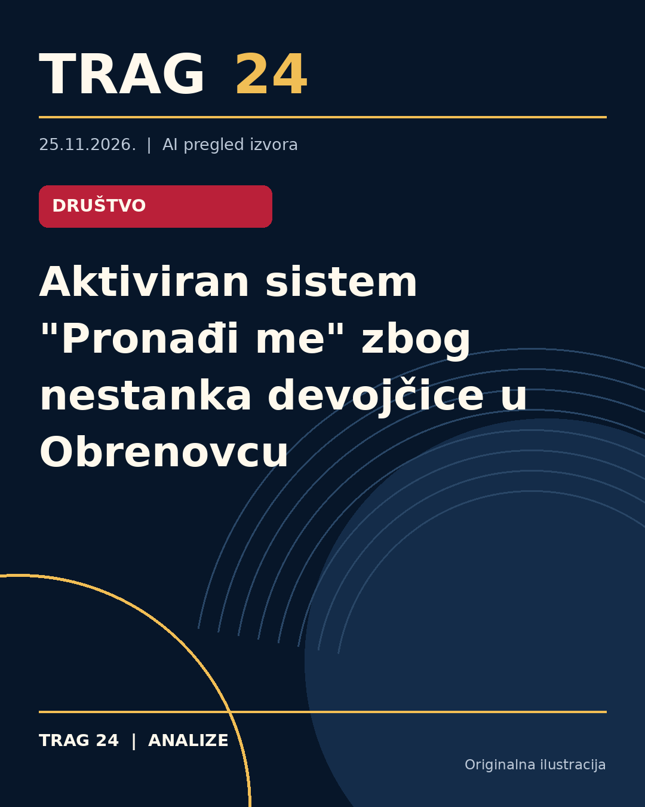

Aktiviran sistem "Pronađi me" zbog nestanka devojčice u Obrenovcu

ŠTA SE DOGODILO
Četrnaestogodišnja Božica Ajeti nestala je 23. novembra 2026. godine oko 11 časova u Obrenovcu, nakon što se udaljila iz Osnovne škole "Jovan Jovanović Zmaj" u nepoznatom pravcu. Zbog njenog nestanka, pripadnici Ministarstva unutrašnjih poslova aktivirali su sistem „Pronađi me“ za hitno obaveštavanje javnosti.
HRONOLOGIJA
Božica je poslednji put viđena kod škole 23. novembra u prepodnevnim časovima, oko 11 sati, kada se udaljila iz školskog dvorišta. Od momenta prijave nestanka, policija poziva građane da pomognu u pronalasku devojčice pozivom na broj 192 ili direktno na broj 064/8924059.
ŠTA NAVODE IZVORI
Izveštaji medija Mondo, B92 i Insajder slažu se oko osnovnih činjenica o nestanku: Božica je visine oko 160 centimetara, mršavije građe, ima braon oči, dugu crnu kosu i svetliju put. U trenutku nestanka nosila je sivu jaknu, crnu duksericu, crne helanke i bordo patike. Svi izvori napominju da je sistem „Pronađi me“ aktiviran te pozivaju na pomoć građana kako bi se prikupile korisne informacije.
ŠTA JE POTVRĐENO
Potvrđeno je da je devojčica nestala 23. novembra oko 11 časova u Obrenovcu i da je pokrenuta policijska potraga, uključujući aktiviranje nacionalnog sistema za hitno obaveštavanje „Pronađi me“. Opis fizičkog izgleda i odeće u trenutku nestanka takođe je potvrđen u svim izvorima. Policija je zvanično apelovala da svi saznanja o devojčici odmah prijave.
ŠTA NIJE POTVRĐENO
Nije potvrđeno zašto se Božica udaljila iz škole niti da li je bilo ikakvih dodatnih okolnosti vezanih za njen nestanak. Takođe, nema dostupnih informacija o eventualnom mestu na kojem bi se mogla nalaziti, niti o tome da li je primljena ili zapažena negde na teritoriji Obrenovca ili van nje.
ŠTA OSTАJE OTVORENO: Ostaje nepoznato gde se Božica Ajeti trenutno nalazi i koji su uzroci njenog nestanka. Potrebne su dalje informacije od građana i istražne službe kako bi se rasvetlio svaki detalj vezan za ovaj slučaj i kako bi se devojčica što pre pronašla i bezbedno vratila porodici.
Izvori
- https://mondo.rs/Info/Drustvo/a2316400/oglasio-se-mup-o-nestaloj-devojcici-14-iz-obrenovca.html
- https://www.b92.net/info/hronika/287840/nestala-devojcica-ajeti-bozica-14-u-obrenovcu-aktiviran-sistem-pronadji-me/vest
- https://insajder.net/prenosimo/nestala-devojcica-u-obrenovcu-aktiviran-sistem-pronadi-me
Ova analiza je pripremljena uz pomoć veštačke inteligencije na osnovu javno dostupnih izvora. Navodi izvora nisu nužno nezavisno potvrđeni.